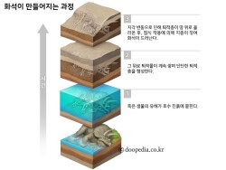
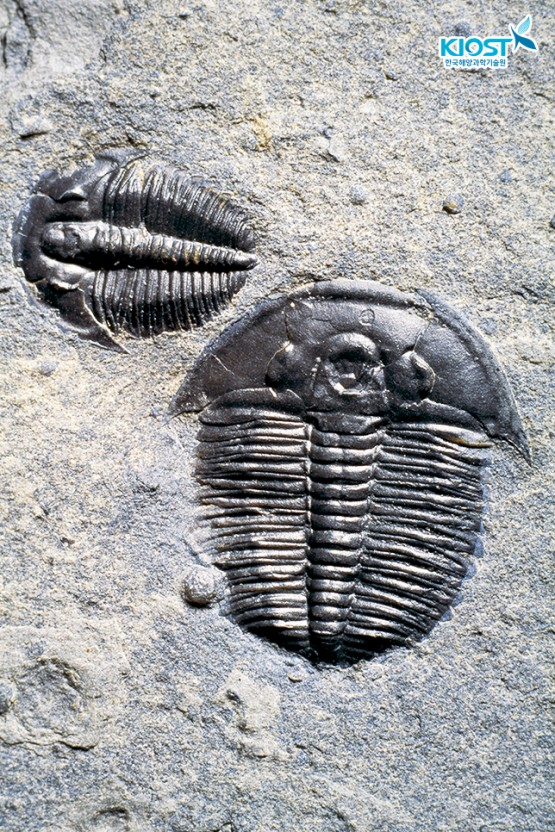
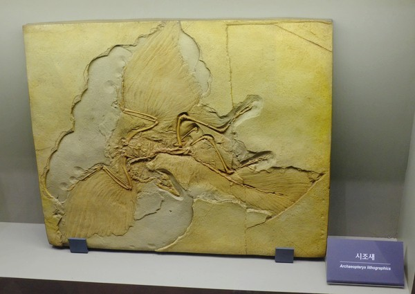
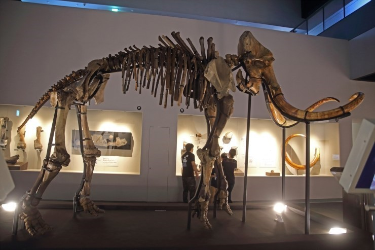
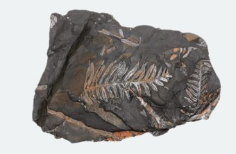
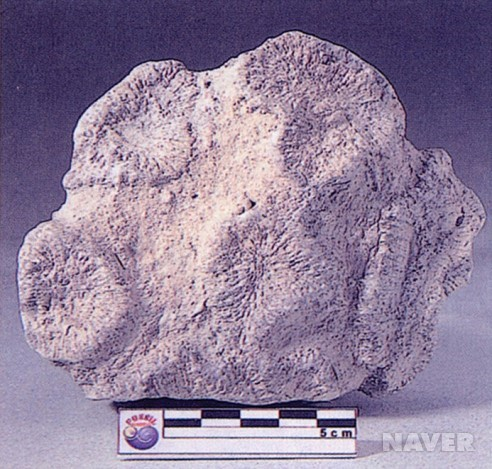
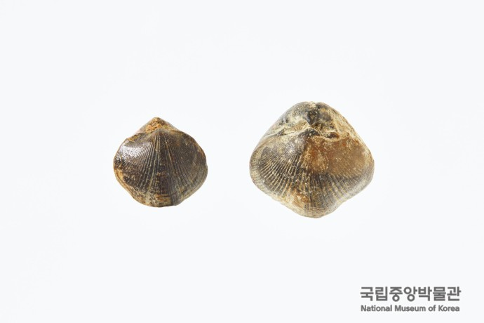

화석이란?
지질시대의 퇴적암 안에 퇴적물과 함께 퇴적된 동식물의 유해나 흔적
화석의 생성 과정
생물의 유해가 묻히고 그 위로 퇴적층이 쌓이며 만들어짐 각 변동으로
퇴적층이 올라온 후 침식 작용에 의해 지층이 깎이며 화석이 드러남

화석의 생성 조건
1. 단단한 뼈와 껍데기가 있어야 함
2. 개체수가 많아야 함
3. 빨리 묻혀야 함
4. 지각변동을 받지 않아야 함
5. 화석화 작용을 받아야 함
표준화석
정의 : 지층의 생성 시기를 알려주는 화석
조건 : 생존 기간이 짧고 분포 면적이 넓음
화석 종류
고생대 : 삼엽충, 필석, 갑주어, 방주충
중생대 : 암모나이트, 공룡, 시조새
신생대 : 매머드, 화폐석



시상화석
정의 : 지층의 생성 환경을 알려주는 화석
조건 : 생존 기간이 길고 분포 면적이 좁음
화석 종류
고사리 : 따뜻하고 습한 육지
산호 : 따뜻하고 염분이 많은 얕은 바다
조개 : 얕은 바다나 갯벌
활엽수 : 강수량이 많고 습도가 높은지역



화석의 활용
활용 이유 : 화석으로 과거 생물의 모습과 생활 습성 및 환경을 유추할 수 있음
과거의 환경 알아내는 방법
1. 지층의 생성 순서
- 두 지층의 생성 시대 또는 환경을 알 수 있음
2. 과거의 수륙 분포
육지 : 공룡, 매머드, 고사리, 침엽수 등
바다 : 삼엽충, 필석, 갑주어, 암모나이트, 화폐석, 산호, 조개 등
3. 대륙이동
- 멀리 떨어져 있는 대륙의 화석을 비교해 지질 시대 동안 대륙의 이동 확인
4. 화석을 통한 생물의 진화 해석
- 시대 순으로 나열하면 생물이 변해간 모습을 알 수 있음
5. 지층의 융기
- 바다 생물이 육지에서 발견되면 이 지층은 바다 밑에서 만들어진 후 융기했다는 것을 알 수 있음